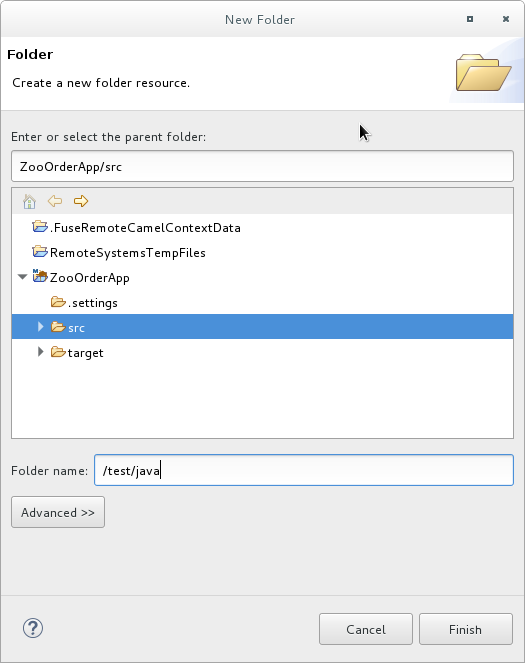
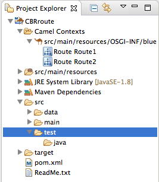
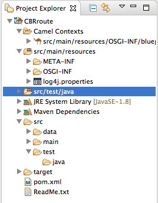
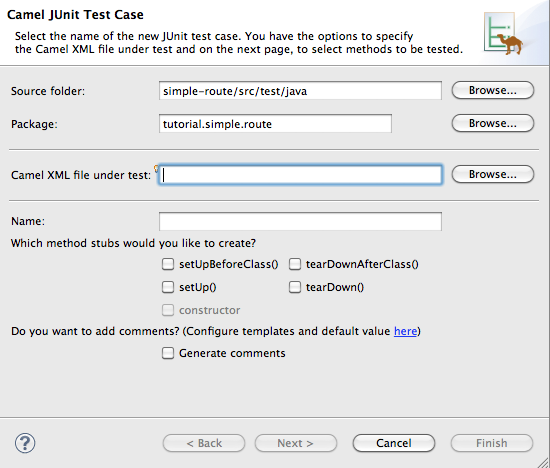
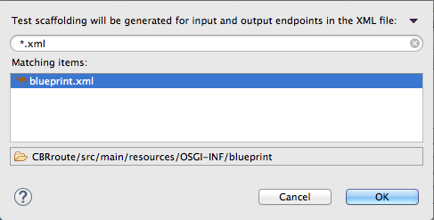
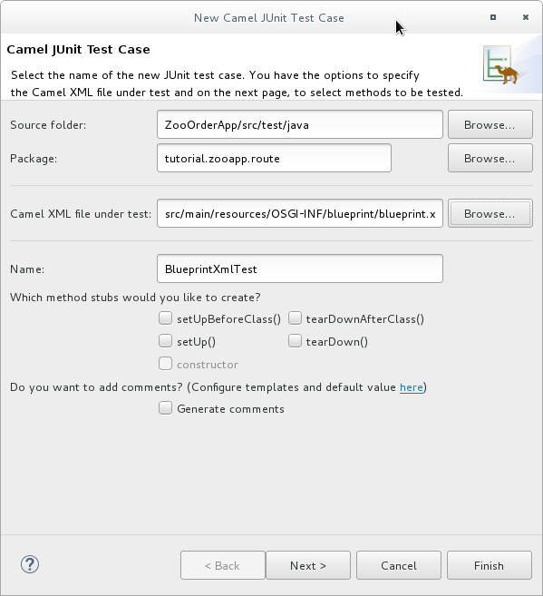
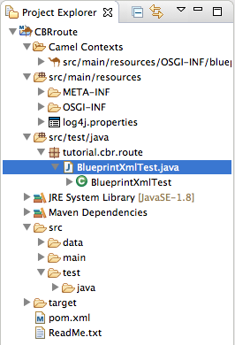
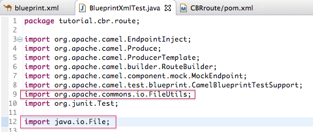
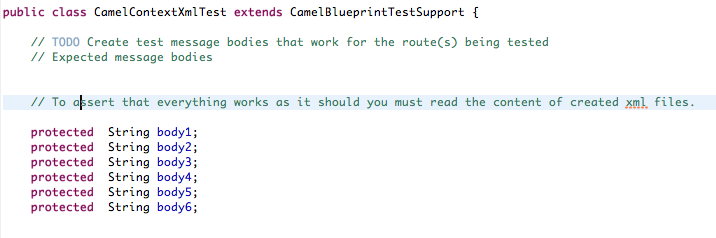
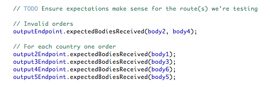

The New Camel Test Case wizard generates a boilerplate JUnit test case. When you create or modify a route (for example, adding more processors to it), you create or modify the generated test case to add expectations and assertions specific to the route you created or updated.This ensures that the test is valid for the route.
In this tutorial you will:
Create the
/src/test/folder to store the JUnit test caseGenerate the JUnit test case for the CBRroute project
Modify the newly generated JUnit test case
Modify the CBRroute project's
pom.xmlfileRun the CBRroute with the new JUnit test case
Observe the output
To complete this tutorial you need the CBRroute project you used in To Trace a Message Through a Route
![[Note]](imagesdb/note.png) | Note |
|---|---|
If you skipped any tutorial after To Create a New Route, you can use the
prefabricated |
Delete any trace-generated messages from the
CBRroute project's
/src/data/ directory and
/target/messages/ subdirectories in
Project Explorer. Trace-generated messages
begin with the ID- prefix. For example, Figure 5, “Trace-generated messages” shows six trace-generated
messages:
Select all trace-generated messages in batch, right-click to open the context menu, and select .
Before you create a JUnit test case for the CBRroute project, you must create a folder for it that is included in the build path:
In Project Explorer, right-click the CBRroute project's root to open the context menu, and then select > .
In the New Folder dialog, in the project tree pane, expand the
CBRroutenode and select thesrcfolder.Make sure
CBRroute/srcappears in the Enter or select the parent folder field.In Folder name, enter
/test/java:Click .
In Project Explorer, the new
src/test/javafolder appears under thesrc/main/resourcesfolder:Verify that the new
/src/test/javafolder is included in the build path.In Project Explorer, right-click the
/src/test/javafolder to open the context menu.Select to see the menu options:
The menu option verifies that the
/src/test/javafolder is currently included in the build path:
To create a JUnit test case for the CBRroute project:
In Project Explorer, select
src/test/java.Right-click it to open the context menu, and then select > :
In the Camel JUnit Test Case wizard, make sure the Source folder field contains
CBRroute/src/test/java. To find the proper folder, click .
.In the Package field, enter
tutorial.cbr.route. This is the package that will include the new test case.Next to the Camel XML file under test field, click to open a file explorer configured to screen for XML files, and then select the CBRroute project's
blueprint.xmlfile:Click .
Note The Name field defaults to
BlueprintXmlTest.Click to open the Test Endpoints page.
By default, all endpoints are selected and will be included in the test case. Click .
Note If prompted, add JUnit to the build path.
The artifacts for the test are added to your project and appear in
Project Explorer under
src/test/java. The
class implementing the test case opens in the tooling's Java
editor:
package tutorial.cbr.route;
import org.apache.camel.EndpointInject;
import org.apache.camel.Produce;
import org.apache.camel.ProducerTemplate;
import org.apache.camel.builder.RouteBuilder;
import org.apache.camel.component.mock.MockEndpoint;
import org.apache.camel.test.blueprint.CamelBlueprintTestSupport;
import org.junit.Test;
public class BlueprintXmlTest extends CamelBlueprintTestSupport {
// TODO Create test message bodies that work for the route(s) being tested
// Expected message bodies
protected object[] expectBodies = {
"<something id='1'>expectedBody1</something>",
"<something id='2'>expectedBody2</something>";
// Templates to send to input endpoints
@Produce(uri = "file:src/data?noop=true")
protected ProducerTemplate inputEndpoint;
@Produce(uri = "direct:OrderFulfillment")
protected ProducerTemplate input2Endpoint;
// Mock endpoints used to consume messages from the output endpoints and
// then perform assertions
@EndpointInject(uri = "mock:output")
protected MockEndpoint outputEndpoint;
@EndpointInject(uri = "mock:output2")
protected MockEndpoint output2Endpoint;
@EndpointInject(uri = "mock:output3")
protected MockEndpoint output3Endpoint;
@EndpointInject(uri = "mock:output4")
protected MockEndpoint output4Endpoint;
@EndpointInject(uri = "mock:output5")
protected MockEndpoint output5Endpoint;
@EndpointInject(uri = "mock:output6")
protected MockEndpoint output6Endpoint;
@Test
public void testCamelRoute() throws Exception {
// Create routes from the output endpoints to our mock endpoints so we can
// assert expectations
context.addRoutes(new RouteBuilder() {
@Override
public void configure() throws Exception {
from("file:target/messages/invalidOrders").to(outputEndpoint);
from("file:target/messages/GreatBritain").to(output3Endpoint);
from("file:target/messages/Germany").to(output4Endpoint);
from("file:target/messages/USA").to(output2Endpoint);
from("file:target/messages/France").to(output5Endpoint);
}
});
// Define some expectations
// TODO Ensure expectations make sense for the route(s) we're testing
outputEndpoint.expectedBodiesReceivedInAnyOrder(expectedBodies);
// Send some messages to input endpoints
for (Object expectedBody : expectedBodies) {
inputEndpoint.sendBody(expectedBody);
}
// Validate our expectations
assertMockEndpointsSatisfied();
}
@Override
protected String getBlueprintDescriptor() {
return "OSGI-INF/blueprint/blueprint.xml";
}
}This generated JUnit test case is insufficient for the CBRroute
project, and it will fail to run successfully. You need to modify it and the project's
pom.xml, as described in Modifying the BlueprintXmlTest file and
Modifying the pom.xml file.
You must modify the BlueprintXmlTest.java file to:
Import several classes that support required file functions
Create variables for holding the content of the various source
.xmlfilesRead the content of the source
.xmlfilesDefine appropriate expectations
In Project Explorer, expand the CBRroute project to expose the
BlueprintXmlTest.javafile:Double-click
BlueprintXmlTest.javato open the file in the tooling's Java editor.In the Java editor, click the expand button next to
import org.apache.camel.EndpointInject;to expand the list.Add the two lines shown below. Adding the first line will cause an error that will be resolved when you update the
pom.xmlfile as instructed in the next section.Scroll down to the lines that follow directly after
// Expected message bodies.Replace those lines—
protected Object[] expectedBodies={ ...... expectedBody2</something>"};— with theprotected String body#;lines shown here:Scroll down to the line
public void testCamelRoute() throws Exception {, and insert directly after it the linesbody# = FileUtils.readFileToString(new File("src/data/message#.xml"), "UTF-8");shown below. These lines will indicate an error until you update thepom.xmlfile as instructed in the next section.
Scroll down to the lines that follow directly after
// TODO Ensure expectations make sense for the route(s) we're testing.Replace the block of code that begins with
outputEndpoint.expectedBodiesReceivedInAnyOrder(expectedBodies);and ends with ...inputEndpoint.sendBody(expectedBody); }with the lines shown here:Leave the remaining code as is.
Save the file.
Check that your updated
BlueprintXmlTest.javafile has the required modifications. It should look something like this:package tutorial.cbr.route; import org.apache.camel.EndpointInject; import org.apache.camel.Produce; import org.apache.camel.ProducerTemplate; import org.apache.camel.builder.RouteBuilder; import org.apache.camel.component.mock.MockEndpoint; import org.apache.camel.test.blueprint.CamelBlueprintTestSupport; import org.apache.commons.io.FileUtils; import org.junit.Test; import java.io.File; public class BlueprintXmlTest extends CamelBlueprintTestSupport { // TODO Create test message bodies that work for the route(s) being tested // Expected message bodies // To assert that everything works as it should, you must read // the content of the created xml files protected String body1; protected String body2; protected String body3; protected String body4; protected String body5; protected String body6; // Templates to send to input endpoints @Produce(uri = "file:src/data?noop=true") protected ProducerTemplate inputEndpoint; // Mock endpoints used to consume messages from the output endpoints // and then perform assertions @EndpointInject(uri = "mock:output") protected MockEndpoint outputEndpoint; @EndpointInject(uri = "mock:output2") protected MockEndpoint output2Endpoint; @EndpointInject(uri = "mock:output3") protected MockEndpoint output3Endpoint; @EndpointInject(uri = "mock:output4") protected MockEndpoint output4Endpoint; @EndpointInject(uri = "mock:output5") protected MockEndpoint output5Endpoint; @Test public void testCamelRoute() throws Exception { // Easy way of reading content of xml files to String object, but you must // add a dependency to the commons-io project to the CBRroute pom.xml file body1 = FileUtils.readFileToString(new File("src/data/message1.xml"), "UTF-8"); body3 = FileUtils.readFileToString(new File("src/data/message3.xml"), "UTF-8"); body5 = FileUtils.readFileToString(new File("src/data/message5.xml"), "UTF-8"); body6 = FileUtils.readFileToString(new File("src/data/message6.xml"), "UTF-8"); // Invalid Orders body2 = FileUtils.readFileToString(new File("src/data/message2.xml"), "UTF-8"); body4 = FileUtils.readFileToString(new File("src/data/message4.xml"), "UTF-8"); context.addRoutes(new RouteBuilder() { @Override public void configure() throws Exception { from("file:target/messages/invalidOrders").to(outputEndpoint); from("file:target/messages/GreatBritain").to(output3Endpoint); from("file:target/messages/Germany").to(output4Endpoint); from("file:target/messages/USA").to(output2Endpoint); from("file:target/messages/France").to(output5Endpoint); } }); // Define some expectations // TODO Ensure expectations make sense for the route(s) we're testing // Invalid Orders outputEndpoint.expectedBodiesReceived(body2, body4); //For each country, one order output2Endpoint.expectedBodiesReceived(body1); output3Endpoint.expectedBodiesReceived(body3); output4Endpoint.expectedBodiesReceived(body6); output5Endpoint.expectedBodiesReceived(body5); // Validate our expectations assertMockEndpointsSatisfied(); } @Override protected String getBlueprintDescriptor() { return "OSGI-INF/blueprint/blueprint.xml"; } }
You need to add a dependency on the commons-io project to the
CBRroute project's pom.xml file:
In Project Explorer, double-click
pom.xml, located below thetargetfolder, to open the file in the tooling's XML editor.Click the pom.xml tab at the bottom of the page to open the file for editing.
Add these lines to the end of the
<dependencies>section:<dependency> <groupId>commons-io</groupId> <artifactId>commons-io</artifactId> <version>2.5</version> <scope>test</scope> </dependency>Save the file.
The contents of the entire
pom.xmlfile should look like this:<?xml version="1.0" encoding="UTF-8"?> <project xsi:schemaLocation="http://maven.apache.org/POM/4.0.0 http://maven.apache.org/xsd/maven-4.0.0.xsd" xmlns="http://maven.apache.org/POM/4.0.0" xmlns:xsi="http://www.w3.org/2001/XMLSchema-instance"> <modelVersion>4.0.0</modelVersion> <groupId>co</groupId> <artifactId>camel-blueprint</artifactId> <version>1.0.0-SNAPSHOT</version> <packaging>bundle</packaging> <name>Camel Blueprint Quickstart</name> <description>Empty Camel Blueprint Example</description> <licenses> <license> <name>Apache License, Version 2.0</name> <url>http://www.apache.org/licenses/LICENSE-2.0.html</url> <distribution>repo</distribution> </license> </licenses> <properties> <camel.version>2.18.1.redhat-000015</camel.version> <project.reporting.outputEncoding>UTF-8</project.reporting.outputEncoding> <version.maven-bundle-plugin>2.3.7<</version.maven-bundle-plugin> <jboss.fuse.bom.version>6.3.0.redhat-187</jboss.fuse.bom.version> <project.build.sourceEncoding>UTF-8</project.build.sourceEncoding> </properties> <dependencyManagement> <dependencies> <dependency> <groupId>org.jboss.fuse.bom</groupId> <artifactId>jboss-fuse-parent</artifactId> <version>${jboss.fuse.bom.version}</version> <type>pom</type> <scope>import</scope> </dependency> </dependencies> </dependencyManagement> <dependencies> <dependency> <groupId>org.apache.camel</groupId> <artifactId>camel-core</artifactId> <version>${camel.version}</version> </dependency> <dependency> <groupId>org.apache.camel</groupId> <artifactId>camel-blueprint</artifactId> <version>${camel.version}</version> </dependency> <dependency> <groupId>org.slf4j</groupId> <artifactId>slf4j-api</artifactId> </dependency> <dependency> <groupId>org.slf4j</groupId> <artifactId>slf4j-log4j12</artifactId> </dependency> <dependency> <groupId>log4j</groupId> <artifactId>log4j</artifactId> </dependency> <dependency> <groupId>org.apache.camel</groupId> <artifactId>camel-test-blueprint</artifactId> <version>${camel.version}</version> <scope>test</scope> </dependency> <dependency> <groupId>commons-io</groupId> <artifactId>commons-io</artifactId> <version>2.5</version> <scope>test</scope> </dependency> </dependencies> <repositories> <repository> <releases> <enabled>true</enabled> <updatePolicy>never</updatePolicy> </releases> <snapshots> <enabled>false</enabled> </snapshots> <id>fuse-public-repository</id> <name>FuseSource Community Release Repository</name> <url>https://repo.fusesource.com/nexus/content/groups/public</url> </repository> <repository> <releases> <enabled>true</enabled> <updatePolicy>never</updatePolicy> </releases> <snapshots> <enabled>false</enabled> </snapshots> <id>red-hat-ga-repository</id> <name>Red Hat GA Repository</name> <url>https://maven.repository.redhat.com/ga</url> </repository> <repository> <id>fuse-ea</id> <url>http://download.eng.brq.redhat.com/brewroot/repos/jb-fuse-6.2-build/latest/maven</url> </repository> <repository> <id>redhat-ea-repository</id> <url>https://maven.repository.redhat.com/earlyaccess/all</url> </repository> </repositories> <pluginRepositories> <pluginRepository> <releases> <enabled>true</enabled> <updatePolicy>never</updatePolicy> </releases> <snapshots> <enabled>false</enabled> </snapshots> <id>fuse-public-repository</id> <name>FuseSource Community Release Repository</name> <url>https://repo.fusesource.com/nexus/content/groups/public</url> </pluginRepository> <pluginRepository> <releases> <enabled>true</enabled> <updatePolicy>never</updatePolicy> </releases> <snapshots> <enabled>false</enabled> </snapshots> <id>red-hat-ga-repository</id> <name>Red Hat GA Repository</name> <url>https://maven.repository.redhat.com/ga<url> </pluginRepository> <pluginRepository> <id>fuse-ea</id> <url>http://download.eng.brq.redhat.com/brewroot/repos/jb-fuse-6.2-build/latest/maven</url> </pluginRepository> <pluginRepository> <id>redhat-ea-repository</id> <url>https://maven.repository.redhat.com/earlyaccess/all</url> </pluginRepository> <pluginRepository> <id>camelStaging</id> <url>https://repository.jboss.org/nexus/content/repositories/fusesource_releases_external-2384</url> </pluginRepository> </pluginRepositories> <build> <defaultGoal>install</defaultGoal> <plugins> <plugin> <groupId>org.apache.felix</groupId> <artifactId>maven-bundle-plugin</artifactId> <version>${version.maven-bundle-plugin}</version> <extensions>true</extensions> <configuration> <instructions> <Bundle-SymbolicName>CBRroute</Bundle-SymbolicName> <Bundle-Name>Empty Camel Blueprint Example [CBRroute]</Bundle-Name> </instructions> </configuration> </plugin> <plugin> <artifactId>maven-compiler-plugin</artifactId> <version>3.5.1</version> <configuration> <source>1.8</source> <target>1.8</target> </configuration> </plugin> <plugin> <artifactId>maven-resources-plugin</artifactId> <version>3.0.1</version> <configuration> <encoding>UTF-8</encoding> </configuration> </plugin> <plugin> <groupId>org.apache.camel</groupId> <artifactId>camel-maven-plugin</artifactId> <version>${camel.version}</version> <configuration> <useBlueprint>true</useBlueprint> </configuration> </plugin> </plugins> </build> </project>
To run the test:
Switch to JBoss perspective to free up more workspace.
Select the project root,
CBRroute, in the Project Explorer.Open the context menu.
Select > .
Note By default, JUnit view opens in the sidebar. (To provide a better view, drag it to the bottom, right panel that displays the Console, Servers, and Properties tabs.)
If the test runs successfully, you'll see something like this:
Note Sometimes the test fails the first time JUnit is run on a project. Rerunning the test ususally results in a successful outcome.
When the test does fail, you'll see something like this:
Note JUnit will fail if your execution environment is not set to Java SE 8 or 7. The message bar at the top of the JUnit tab will display an error message indicating that it cannot find the correct SDK.
To resolve the issue, open the project's context menu, and select > > . Click the button next to the Execution environment field to locate and select a Java SE 8 or 7 environment.
Examine the output and take action to resolve any test failures.
To see more of the errors displayed in the JUnit panel, click
 on the panel's menu bar to maximize the
view.
on the panel's menu bar to maximize the
view. Before you run the JUnit test case again, delete any JUnit-generated test messages from the CBRroute project's
/src/datafolder in Project Explorer (see Figure 5, “Trace-generated messages”).
To learn more about JUnit testing see JUnit.